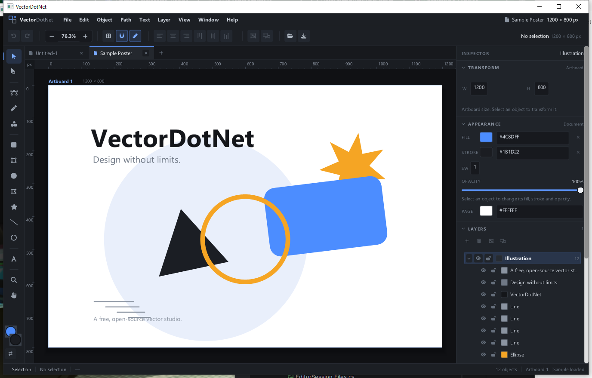
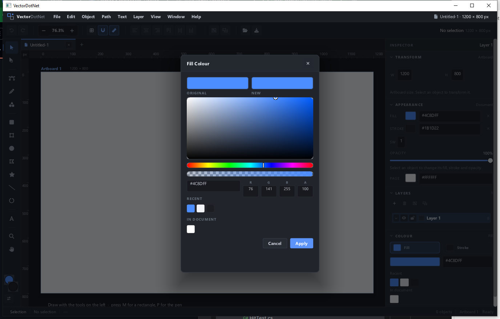
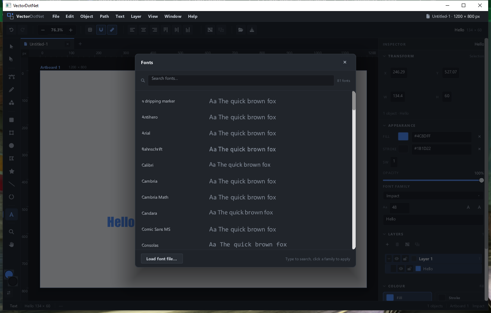
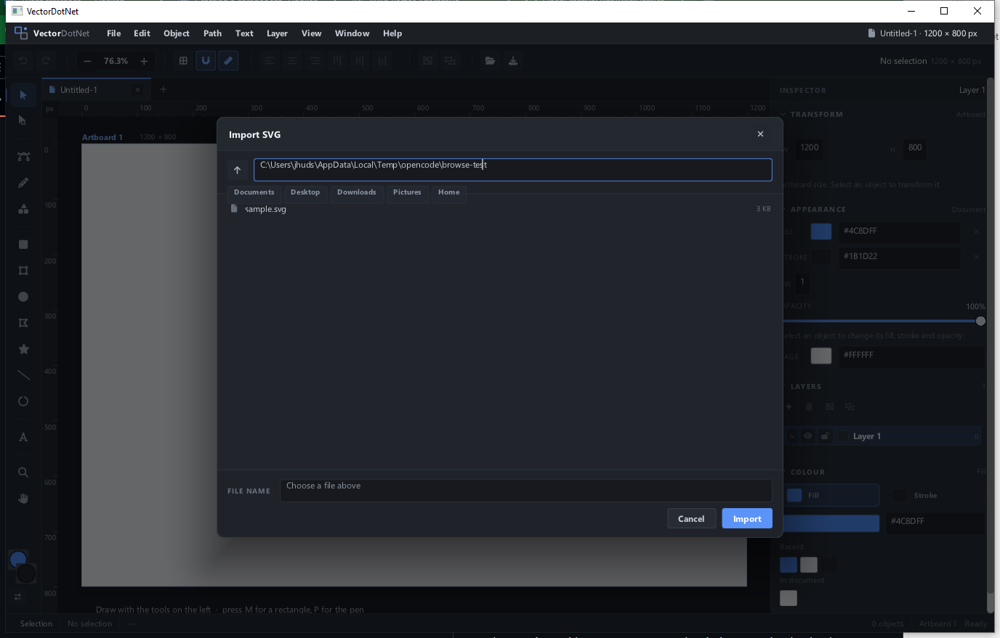
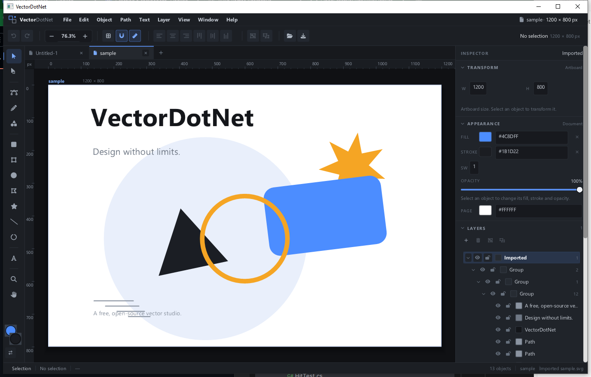
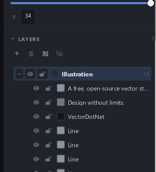

Free vector graphics studio · Windows, Linux, macOS
Draw vectors. Keep every curve.
A professional vector workspace for illustration, icons, logos and layout. Real Bézier paths, live shapes, layers, typography and SVG — with no account, subscription or cloud dependency.
Everything runs locally. Your artwork is never uploaded anywhere.
A real vector engine, not a drawing overlay
Curves stay curves at every zoom level. The document is a tree of paths, groups, layers and artboards, rendered by an anti-aliased scanline rasteriser written for this application.
Paths and live shapes
Cubic Bézier paths with node and handle editing, nonzero and even-odd fills, strokes with caps, joins and dashes, plus live rectangles, ellipses, polygons, stars, lines and spirals.
Layers and transforms
Nested groups, per-layer visibility and locking, object opacity, eight-handle scaling, rotation-ready transforms and multiple artboards.
Colour and type
A full HSV colour picker with alpha, recent colours and an automatic palette from the artwork. Point text with any installed font family, weight, italic and size.
A look around






What you can do
| I want to… | VectorDotNet can |
|---|---|
| Draw a logo or icon | Use the rectangle, ellipse, polygon, star and pen tools, then edit the path nodes directly. |
| Keep a shape editable | Live shapes keep their parameters. Change corner radius, star points or spiral turns later. |
| Align several objects | Align to the selection or the artboard, distribute spacing, or drag with smart alignment guides and snapping. |
| Add a title | Place point text, choose any installed font, adjust size, weight and slant, or load a font file at runtime. |
| Reuse artwork across documents | Group objects, duplicate in place, or copy and paste between open document tabs. |
| Work on several designs at once | Open multiple document tabs. Each keeps its own view, selection and undo history. |
| Bring in an existing SVG | File → Import SVG reads paths, arcs, shapes, groups, transforms, text and <use> references. |
| Hand off clean vectors | File → Export SVG or SVGZ writes standards-compliant paths, strokes, dashes, transforms and text. |
Get started
- Run it. Download a release for your platform, or run
dotnet runfrom a checkout with the .NET 10 SDK. - Try the sample. Choose File → Open Sample to open the poster in a new tab.
- Draw. Press M for a rectangle, E for an ellipse, or P for the pen. Hold Shift to constrain proportions.
- Edit the curve. Switch to A (Direct Selection) and drag anchors or Bézier handles.
- Style it. Click the fill or stroke swatch in the inspector to open the colour picker.
- Export. Press Ctrl+Shift+E and choose a destination in the file browser.
Keyboard shortcuts
| Action | Shortcut |
|---|---|
| Selection / Direct Selection | V / A |
| Pen / Pencil / Lasso | P / N / Q |
| Rectangle / Rounded / Ellipse | M / R / E |
| Polygon / Star / Line | G / S / L |
| Text / Zoom / Hand | T / Z / H |
| Undo / Redo | Ctrl+Z / Ctrl+Y |
| Cut / Copy / Paste / Duplicate | Ctrl+X / C / V / D |
| Group / Ungroup | Ctrl+G / Ctrl+Shift+G |
| Import / Export SVG | Ctrl+Shift+I / Ctrl+Shift+E |
| Nudge (×10 with Shift) | Arrow keys |
| Zoom in / out | Ctrl++ / Ctrl+−, or Ctrl+wheel |
| Pan | Middle mouse drag, or H and drag |
Free, open and private
VectorDotNet is free software. There is no paid tier, no subscription, no account, no advertising and no telemetry. Files are opened, edited and exported on your own computer. The optional font loader reads the font file you choose; it does not contact a font service.
Every feature included
No feature gates, no export watermarks and no cloud-only tools.
Standards first
SVG in and out, ordinary system fonts, and a document model that keeps vectors editable.
Yours to extend
The vector engine and document model live in plain C# under src/Core, separate from the UI.
Run from source
You need the .NET 10 SDK.
dotnet runThe desktop host opens an OpenGL window. The source layout is described in the repository README.